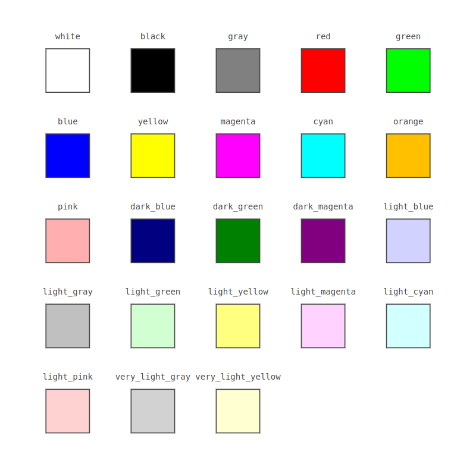
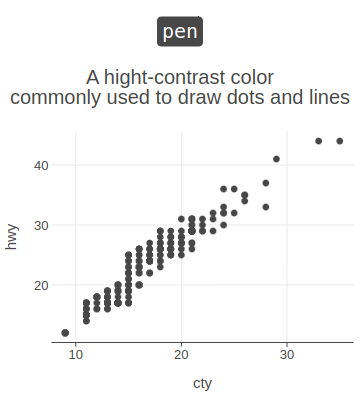
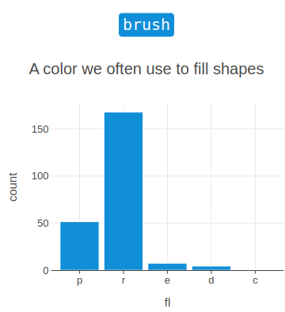
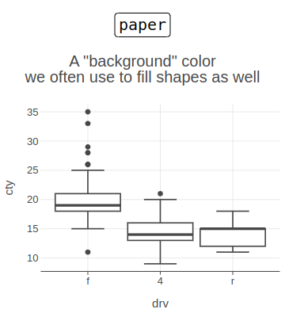
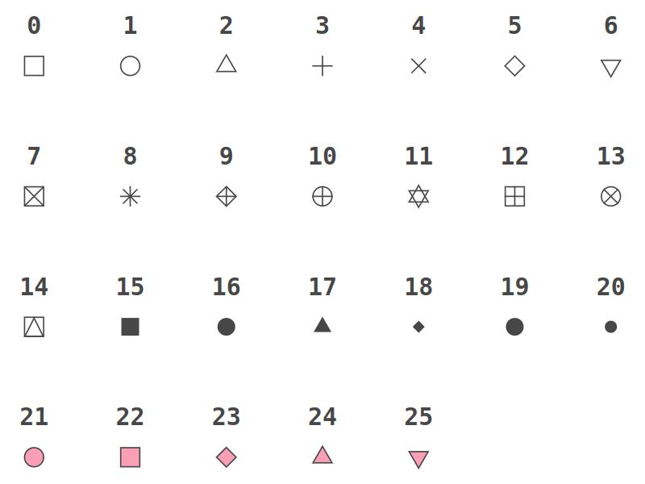
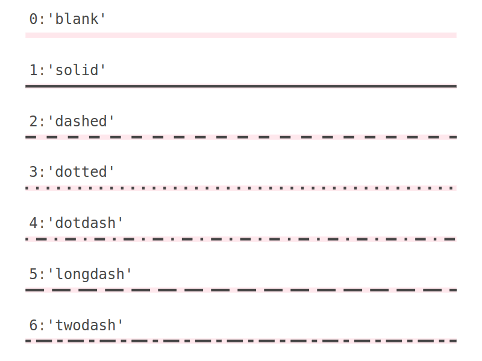
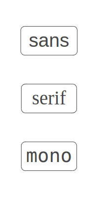
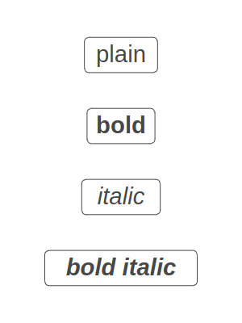

Aesthetics
Color and Fill
Colors and fills of geometries can be specified in the following ways:
RGB/RGBA (e.g.
"rgb(0, 0, 255)").HEX (e.g.
"#0000ff").A name, one of:

A system color name, one of:



An instance of the
java.awt.Colorclass.
Point Shapes

Line Types

Text
Font Family
Universal font names:

The default font family is 'sans'.
You can also use the name of any other font installed on your system (e.g. "Times New Roman").
Font Face

The default font face is 'plain'.
Last modified: 20 August 2024